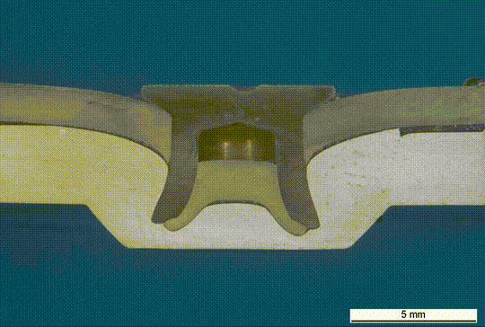

Automated Rivet Analysis
An algorithm that, given the cross-section of a rivet, computes 10 measurement overlays used in car-body construction to judge connection stability. Deployed at several car manufacturers with an estimated 60× workflow speed-up.